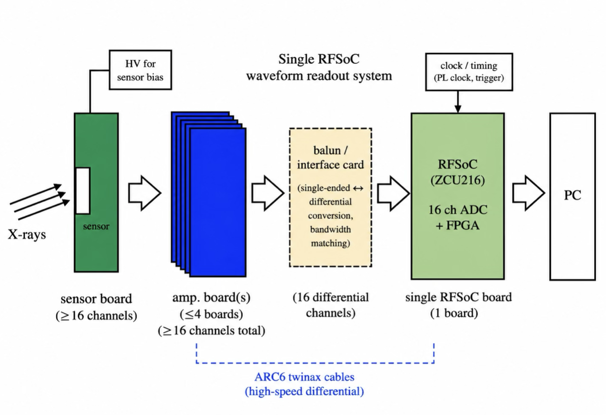
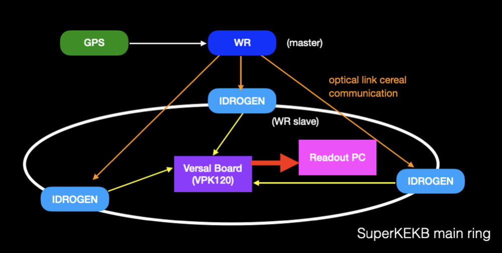
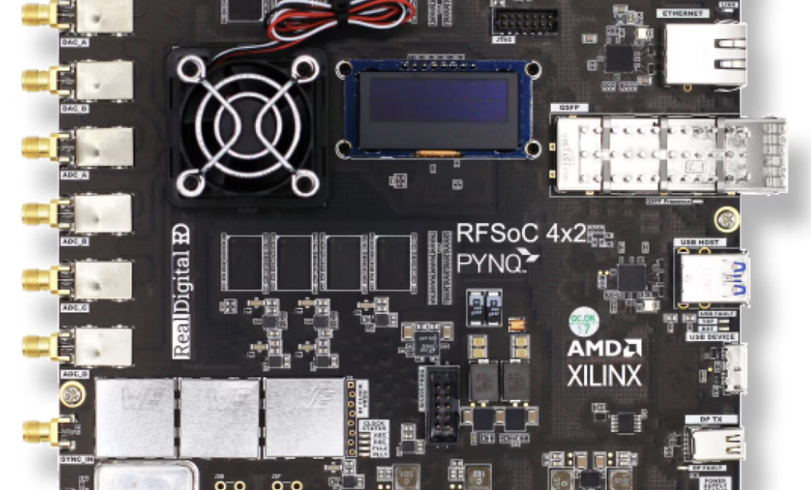
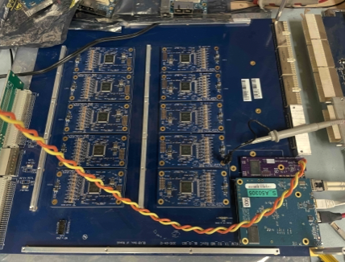
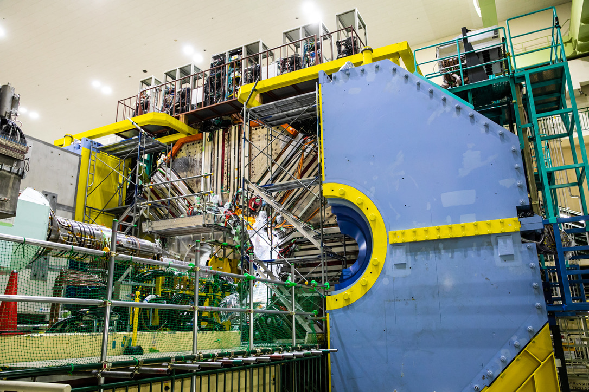

Our work connects accelerator diagnostics, electronics R&D, Belle II detector operation,
and physics analysis. We develop technologies that can move from
today's Belle II systems toward future experiments.


2021-Present
Beam Diagnosis & Accelerator Instrumentation
Fast beam diagnostic systems at SuperKEKB for understanding sudden beam loss events, including BOR and XRM.
The XRM upgrade concept uses multi-channel X-ray sensor readout and RFSoC-based waveform digitization to measure fast beam-size changes.

2024-Present
Electronics R&D
Foundational R&D for future experiments, including open-source ASIC studies, FPGA/RFSoC-based readout, fast-timing digitizers, and hardware-aware AI/ML for low-latency applications.

2025-Present
Belle II KLM and TOP Operation
Detector operation and hardware support for Belle II KLM and TOP systems, including readout robustness, firmware, high-background operation, and KLM TRG upgrades.

Belle II
Physics Analysis: Semileptonic BSM Searches
We are pursuing a direct search for right-handed heavy neutrinos in B->D* ℓ N decays, using semileptonic channels related to the R(D) and R(D*) anomalies. We also plan broader dark-sector searches at Belle II.